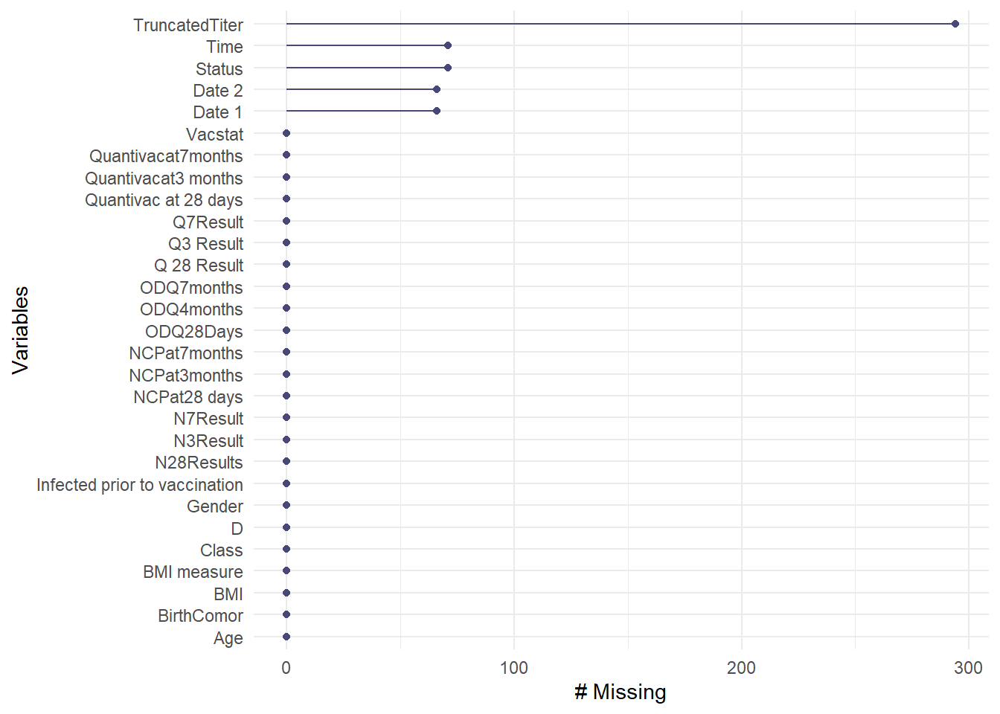

Code
library(tidyverse)
library(readxl)
library(naniar)Ce document reproduit en R le nettoyage déjà réalisé et validé sur Excel pour ce même dataset (voir dictionary/data_dictionary.csv et docs/cleaning_journal_fr.csv). L’objectif est juste de traduire les décisions méthodologiques en code R reproductible, avec la même rigueur de vérification à chaque étape.
library(tidyverse)
library(readxl)
library(naniar)vaccine_raw <- read_excel("../data/raw/vaccine_raw.xlsx")
vaccine <- vaccine_rawdim(vaccine)[1] 294 29glimpse(vaccine)Rows: 294
Columns: 29
$ D <chr> "US-050", "US-509", "US-063", "US-188"…
$ Gender <chr> "F", "M", "F", "M", "M", "F", "F", "M"…
$ BirthComor <chr> "NA", "N", "N", "NA", "NA", "Y", "N", …
$ `BMI measure` <dbl> 22.8, 17.0, 14.4, 21.4, 33.2, 25.5, 17…
$ BMI <chr> "Overweight", "Normal Weight", "Underw…
$ Vacstat <chr> "Non Vaccinated", "Non Vaccinated", "N…
$ `Date 1` <dttm> NA, NA, NA, NA, NA, NA, NA, NA, 2021-…
$ `Date 2` <dttm> NA, NA, NA, NA, NA, NA, NA, NA, 2021-…
$ Age <dbl> 12, 12, 12, 15, 15, 14, 12, 12, 15, 12…
$ Class <chr> "S1", "S1", "S1", "S4", "S4", "S4", "S…
$ `Infected prior to vaccination` <chr> "N", "N", "N", "N", "N", "N", "N", "N"…
$ `Quantivac at 28 days` <chr> "0.1679", "0.3747", "0.1022", "0.2861"…
$ `Q 28 Result` <chr> "N", "N", "N", "N", "N", "N", "N", "N"…
$ ODQ28Days <dbl> 0.031, 0.035, 0.037, 0.038, 0.038, 0.0…
$ `NCPat28 days` <chr> "0.7099", "1.6594", "0.5253", "0.298",…
$ N28Results <chr> "N", "R", "N", "N", "N", "N", "R", "R"…
$ `Quantivacat3 months` <chr> ">120", ">120", ">120", "*****", ">120…
$ `Q3 Result` <chr> "R", "R", "R", "*", "R", "N", "R", "R"…
$ ODQ4months <dbl> 0.958, 0.482, 0.857, 0.737, 3.392, 0.0…
$ NCPat3months <chr> "6.4746", "6.2601", "0.2737", "2.0179"…
$ N3Result <chr> "R", "R", "N", "R", "N", "N", "N", "R"…
$ Quantivacat7months <chr> ">120", ">120", ">120", ">120", ">120"…
$ Q7Result <chr> "R", "R", "R", "R", "R", "N", "R", "*"…
$ ODQ7months <dbl> 0.589, 2.847, 0.499, 0.430, 3.200, 0.0…
$ NCPat7months <chr> "3.3545", "2.3946", "0.1885", "0.6488"…
$ N7Result <chr> "R", "R", "N", "N", "N", "N", "R", "R"…
$ Time <dbl> 210, 210, 210, 210, 210, NA, 210, 210,…
$ Status <dbl> 0, 0, 0, 0, 0, NA, 0, 0, 0, 0, 0, 0, 0…
$ TruncatedTiter <lgl> NA, NA, NA, NA, NA, NA, NA, NA, NA, NA…summary(vaccine) D Gender BirthComor BMI measure
Length:294 Length:294 Length:294 Min. :12.40
Class :character Class :character Class :character 1st Qu.:17.62
Mode :character Mode :character Mode :character Median :20.30
Mean :21.90
3rd Qu.:24.88
Max. :42.20
BMI Vacstat Date 1
Length:294 Length:294 Min. :2021-09-13 00:00:00
Class :character Class :character 1st Qu.:2021-09-14 00:00:00
Mode :character Mode :character Median :2021-09-14 00:00:00
Mean :2021-09-14 12:44:12
3rd Qu.:2021-09-14 00:00:00
Max. :2021-09-29 00:00:00
NA's :66
Date 2 Age Class
Min. :2021-10-07 00:00:00 Min. :11.00 Length:294
1st Qu.:2021-10-07 00:00:00 1st Qu.:12.00 Class :character
Median :2021-10-08 00:00:00 Median :12.00 Mode :character
Mean :2021-10-08 10:00:00 Mean :13.22
3rd Qu.:2021-10-08 00:00:00 3rd Qu.:15.00
Max. :2021-11-04 00:00:00 Max. :16.00
NA's :66
Infected prior to vaccination Quantivac at 28 days Q 28 Result
Length:294 Length:294 Length:294
Class :character Class :character Class :character
Mode :character Mode :character Mode :character
ODQ28Days NCPat28 days N28Results Quantivacat3 months
Min. :0.031 Length:294 Length:294 Length:294
1st Qu.:3.066 Class :character Class :character Class :character
Median :3.500 Mode :character Mode :character Mode :character
Mean :2.819
3rd Qu.:3.500
Max. :3.500
Q3 Result ODQ4months NCPat3months N3Result
Length:294 Min. :0.033 Length:294 Length:294
Class :character 1st Qu.:2.970 Class :character Class :character
Mode :character Median :3.325 Mode :character Mode :character
Mean :2.911
3rd Qu.:3.500
Max. :3.500
Quantivacat7months Q7Result ODQ7months NCPat7months
Length:294 Length:294 Min. :0.031 Length:294
Class :character Class :character 1st Qu.:2.675 Class :character
Mode :character Mode :character Median :3.053 Mode :character
Mean :2.821
3rd Qu.:3.472
Max. :3.500
N7Result Time Status TruncatedTiter
Length:294 Min. : 92.0 Min. :0.00000 Mode:logical
Class :character 1st Qu.:210.0 1st Qu.:0.00000 NA's:294
Mode :character Median :210.0 Median :0.00000
Mean :206.1 Mean :0.06727
3rd Qu.:210.0 3rd Qu.:0.00000
Max. :210.0 Max. :1.00000
NA's :71 NA's :71 gg_miss_var(vaccine)
miss_var_summary(vaccine)# A tibble: 29 × 3
variable n_miss pct_miss
<chr> <int> <num>
1 TruncatedTiter 294 100
2 Time 71 24.1
3 Status 71 24.1
4 Date 1 66 22.4
5 Date 2 66 22.4
6 D 0 0
7 Gender 0 0
8 BirthComor 0 0
9 BMI measure 0 0
10 BMI 0 0
# ℹ 19 more rowsConstat identique à l’inspection Excel :
TruncatedTiter à 100% de manquants,
Time/Status à 24.1% de manquants,
Date 1/Date 2 à 22.4% de manquants chacune
On note que BirthComor n’apparaît pas encore ici car son “NA” est du texte, pas une vraie valeur manquante pour R à ce stade.
Aucune documentation officielle n’accompagnait ce dataset. Le dictionnaire de données a été reconstruit par déduction (analyse des valeurs, vocabulaire de sérologie vaccinale, croisement de variables) lors du nettoyage Excel . Prière de voir dictionary/data_dictionary.csv pour le détail complet.
names(vaccine) [1] "D" "Gender"
[3] "BirthComor" "BMI measure"
[5] "BMI" "Vacstat"
[7] "Date 1" "Date 2"
[9] "Age" "Class"
[11] "Infected prior to vaccination" "Quantivac at 28 days"
[13] "Q 28 Result" "ODQ28Days"
[15] "NCPat28 days" "N28Results"
[17] "Quantivacat3 months" "Q3 Result"
[19] "ODQ4months" "NCPat3months"
[21] "N3Result" "Quantivacat7months"
[23] "Q7Result" "ODQ7months"
[25] "NCPat7months" "N7Result"
[27] "Time" "Status"
[29] "TruncatedTiter" vaccine <- vaccine %>%
rename(
ID_sujet = D,
Sexe = Gender,
Comorbidite_naissance = BirthComor,
Valeur_IMC = `BMI measure`,
Classe_IMC = BMI,
Statut_vaccinal = Vacstat,
Date_dose1 = `Date 1`,
Date_dose2 = `Date 2`,
Age = Age,
Classe_scolaire = Class,
Infection_anterieure = `Infected prior to vaccination`,
Titre_AC_28j = `Quantivac at 28 days`,
Resultat_qual_28j = `Q 28 Result`,
DensiteOptique_28j = ODQ28Days,
CapaciteNeutralisation_28j = `NCPat28 days`,
Resultat_neutralisation_28j = N28Results,
Titre_AC_3mois = `Quantivacat3 months`,
Resultat_qual_3mois = `Q3 Result`,
DensiteOptique_3mois = ODQ4months,
CapaciteNeutralisation_3mois = NCPat3months,
Resultat_neutralisation_3mois = N3Result,
Titre_AC_7mois = `Quantivacat7months`,
Resultat_qual_7mois = Q7Result,
DensiteOptique_7mois = ODQ7months,
CapaciteNeutralisation_7mois = NCPat7months,
Resultat_neutralisation_7mois = N7Result,
Temps_suivi_jours = Time,
Statut_evenement = Status,
Titre_tronque = TruncatedTiter
)
names(vaccine) [1] "ID_sujet" "Sexe"
[3] "Comorbidite_naissance" "Valeur_IMC"
[5] "Classe_IMC" "Statut_vaccinal"
[7] "Date_dose1" "Date_dose2"
[9] "Age" "Classe_scolaire"
[11] "Infection_anterieure" "Titre_AC_28j"
[13] "Resultat_qual_28j" "DensiteOptique_28j"
[15] "CapaciteNeutralisation_28j" "Resultat_neutralisation_28j"
[17] "Titre_AC_3mois" "Resultat_qual_3mois"
[19] "DensiteOptique_3mois" "CapaciteNeutralisation_3mois"
[21] "Resultat_neutralisation_3mois" "Titre_AC_7mois"
[23] "Resultat_qual_7mois" "DensiteOptique_7mois"
[25] "CapaciteNeutralisation_7mois" "Resultat_neutralisation_7mois"
[27] "Temps_suivi_jours" "Statut_evenement"
[29] "Titre_tronque" Variables concernées : Comorbidite_naissance, Date_dose1, Date_dose2.
vaccine %>%
select(Comorbidite_naissance, Date_dose1, Date_dose2) %>%
glimpse()Rows: 294
Columns: 3
$ Comorbidite_naissance <chr> "NA", "N", "N", "NA", "NA", "Y", "N", "NA", "Y",…
$ Date_dose1 <dttm> NA, NA, NA, NA, NA, NA, NA, NA, 2021-09-14, NA,…
$ Date_dose2 <dttm> NA, NA, NA, NA, NA, NA, NA, NA, 2021-10-07, NA,…vaccine <- vaccine %>%
mutate(Comorbidite_naissance = na_if(Comorbidite_naissance, "NA"))
vaccine %>%
select(Comorbidite_naissance, Date_dose1, Date_dose2) %>%
glimpse()Rows: 294
Columns: 3
$ Comorbidite_naissance <chr> NA, "N", "N", NA, NA, "Y", "N", NA, "Y", NA, "N"…
$ Date_dose1 <dttm> NA, NA, NA, NA, NA, NA, NA, NA, 2021-09-14, NA,…
$ Date_dose2 <dttm> NA, NA, NA, NA, NA, NA, NA, NA, 2021-10-07, NA,…Contrairement à Excel, readxl convertit automatiquement les erreurs #N/A en vrai NA à l’import. Date_dose1/Date_dose2 n’ont donc nécessité aucun traitement supplémentaire. Seul le “NA” en texte de Comorbidite_naissance a demandé un na_if().
Variables concernées : CapaciteNeutralisation_(28j, 3mois, 7mois) et Titre_AC_7mois.
vaccine %>%
select(CapaciteNeutralisation_28j, CapaciteNeutralisation_3mois, CapaciteNeutralisation_7mois, Titre_AC_7mois) %>%
glimpse()Rows: 294
Columns: 4
$ CapaciteNeutralisation_28j <chr> "0.7099", "1.6594", "0.5253", "0.298", "0…
$ CapaciteNeutralisation_3mois <chr> "6.4746", "6.2601", "0.2737", "2.0179", "…
$ CapaciteNeutralisation_7mois <chr> "3.3545", "2.3946", "0.1885", "0.6488", "…
$ Titre_AC_7mois <chr> ">120", ">120", ">120", ">120", ">120", "…vaccine <- vaccine %>%
separate(CapaciteNeutralisation_28j,
into = c("CapaciteNeutralisation_28j_mesure1", "CapaciteNeutralisation_28j_mesure2"),
sep = "/", fill = "right", remove = FALSE)
vaccine <- vaccine %>%
separate(CapaciteNeutralisation_3mois,
into = c("CapaciteNeutralisation_3mois_mesure1", "CapaciteNeutralisation_3mois_mesure2"),
sep = "/", fill = "right", remove = FALSE)
vaccine <- vaccine %>%
separate(CapaciteNeutralisation_7mois,
into = c("CapaciteNeutralisation_7mois_mesure1", "CapaciteNeutralisation_7mois_mesure2"),
sep = "/", fill = "right", remove = FALSE)
vaccine <- vaccine %>%
separate(Titre_AC_7mois,
into = c("Titre_AC_7mois_mesure1", "Titre_AC_7mois_mesure2"),
sep = "/", fill = "right", remove = FALSE)vaccine %>%
select(CapaciteNeutralisation_28j_mesure1, CapaciteNeutralisation_28j_mesure2,
CapaciteNeutralisation_3mois_mesure1, CapaciteNeutralisation_3mois_mesure2,
CapaciteNeutralisation_7mois_mesure1, CapaciteNeutralisation_7mois_mesure2) %>%
glimpse()Rows: 294
Columns: 6
$ CapaciteNeutralisation_28j_mesure1 <chr> "0.7099", "1.6594", "0.5253", "0.…
$ CapaciteNeutralisation_28j_mesure2 <chr> NA, NA, NA, NA, NA, NA, NA, NA, N…
$ CapaciteNeutralisation_3mois_mesure1 <chr> "6.4746", "6.2601", "0.2737", "2.…
$ CapaciteNeutralisation_3mois_mesure2 <chr> NA, NA, NA, NA, NA, NA, NA, NA, N…
$ CapaciteNeutralisation_7mois_mesure1 <chr> "3.3545", "2.3946", "0.1885", "0.…
$ CapaciteNeutralisation_7mois_mesure2 <chr> NA, NA, NA, NA, NA, NA, NA, "1.88…Les colonnes d’origine mélangeaient valeurs numériques réelles et codes texte (">120", "*****"). Création de deux nouvelles colonnes par variable, _statut et _valeur, pour conserver l’information qualitative plutôt que de la supprimer ou d’inventer une valeur.
vaccine %>%
select(Titre_AC_28j, Titre_AC_3mois, Titre_AC_7mois_mesure1, Titre_AC_7mois_mesure2) %>%
distinct()# A tibble: 136 × 4
Titre_AC_28j Titre_AC_3mois Titre_AC_7mois_mesure1 Titre_AC_7mois_mesure2
<chr> <chr> <chr> <chr>
1 0.1679 >120 >120 <NA>
2 0.3747 >120 >120 <NA>
3 0.1022 >120 >120 <NA>
4 0.2861 ***** >120 <NA>
5 0.3317 >120 >120 <NA>
6 0.2117 0.2649 0.0426 <NA>
7 0.1797 >120 >120 <NA>
8 0.2709 >120 ***** <NA>
9 4.4375 >120 ***** <NA>
10 0.2937 ***** >120 <NA>
# ℹ 126 more rowsvaccine <- vaccine %>%
mutate(
Titre_AC_28j_statut = case_when(
is.na(Titre_AC_28j) ~ "Manquant",
str_starts(Titre_AC_28j, ">") ~ "Censure haute",
Titre_AC_28j == "*****" ~ "Non testé",
TRUE ~ "Normal"
),
Titre_AC_3mois_statut = case_when(
is.na(Titre_AC_3mois) ~ "Manquant",
str_starts(Titre_AC_3mois, ">") ~ "Censure haute",
Titre_AC_3mois == "*****" ~ "Non testé",
TRUE ~ "Normal"
),
Titre_AC_7mois_mesure1_statut = case_when(
is.na(Titre_AC_7mois_mesure1) ~ "Manquant",
str_starts(Titre_AC_7mois_mesure1, ">") ~ "Censure haute",
Titre_AC_7mois_mesure1 == "*****" ~ "Non testé",
TRUE ~ "Normal"
),
Titre_AC_7mois_mesure2_statut = case_when(
is.na(Titre_AC_7mois_mesure2) ~ "Manquant",
str_starts(Titre_AC_7mois_mesure2, ">") ~ "Censure haute",
Titre_AC_7mois_mesure2 == "*****" ~ "Non testé",
TRUE ~ "Normal"
)
)vaccine %>%
select(Titre_AC_28j, Titre_AC_28j_statut, Titre_AC_3mois, Titre_AC_3mois_statut,
Titre_AC_7mois_mesure1, Titre_AC_7mois_mesure1_statut, Titre_AC_7mois_mesure2,
Titre_AC_7mois_mesure2_statut) %>%
distinct()# A tibble: 136 × 8
Titre_AC_28j Titre_AC_28j_statut Titre_AC_3mois Titre_AC_3mois_statut
<chr> <chr> <chr> <chr>
1 0.1679 Normal >120 Censure haute
2 0.3747 Normal >120 Censure haute
3 0.1022 Normal >120 Censure haute
4 0.2861 Normal ***** Non testé
5 0.3317 Normal >120 Censure haute
6 0.2117 Normal 0.2649 Normal
7 0.1797 Normal >120 Censure haute
8 0.2709 Normal >120 Censure haute
9 4.4375 Normal >120 Censure haute
10 0.2937 Normal ***** Non testé
# ℹ 126 more rows
# ℹ 4 more variables: Titre_AC_7mois_mesure1 <chr>,
# Titre_AC_7mois_mesure1_statut <chr>, Titre_AC_7mois_mesure2 <chr>,
# Titre_AC_7mois_mesure2_statut <chr>Le test is.na() en premier dans case_when() sert surtout pour Titre_AC_7mois_mesure2. Après séparation des cellules “x/y” avec fill = "right", la plupart des sujets n’avaient qu’une seule mesure, donc mesure2 est vide pour eux. Ces cas doivent donc ressortir “Manquant”, pour ne pas être classés à tort en “Normal” (piège déjà rencontré sur Excel).
Sur Titre_AC_28j/3mois/7mois_mesure1, “Manquant” doit rester à 0, ces colonnes n’ayant aucune vraie cellule vide à l’origine.
vaccine <- vaccine %>%
mutate(
Titre_AC_28j_valeur = as.numeric(Titre_AC_28j),
Titre_AC_3mois_valeur = as.numeric(Titre_AC_3mois),
Titre_AC_7mois_mesure1_valeur = as.numeric(Titre_AC_7mois_mesure1),
Titre_AC_7mois_mesure2_valeur = as.numeric(Titre_AC_7mois_mesure2)
)vaccine %>%
select(Titre_AC_28j, Titre_AC_28j_valeur, Titre_AC_3mois, Titre_AC_3mois_valeur,
Titre_AC_7mois_mesure1, Titre_AC_7mois_mesure1_valeur, Titre_AC_7mois_mesure2,
Titre_AC_7mois_mesure2_valeur) %>%
distinct()# A tibble: 136 × 8
Titre_AC_28j Titre_AC_28j_valeur Titre_AC_3mois Titre_AC_3mois_valeur
<chr> <dbl> <chr> <dbl>
1 0.1679 0.168 >120 NA
2 0.3747 0.375 >120 NA
3 0.1022 0.102 >120 NA
4 0.2861 0.286 ***** NA
5 0.3317 0.332 >120 NA
6 0.2117 0.212 0.2649 0.265
7 0.1797 0.180 >120 NA
8 0.2709 0.271 >120 NA
9 4.4375 4.44 >120 NA
10 0.2937 0.294 ***** NA
# ℹ 126 more rows
# ℹ 4 more variables: Titre_AC_7mois_mesure1 <chr>,
# Titre_AC_7mois_mesure1_valeur <dbl>, Titre_AC_7mois_mesure2 <chr>,
# Titre_AC_7mois_mesure2_valeur <dbl>Les avertissements “NAs introduits lors de la conversion automatique” sont normaux et attendus ici : as.numeric() transforme les codes texte (">120", "*****") en NA, exactement l’équivalent du SIERREUR(CNUM(...)) utilisé sur Excel. Ce n’est pas une erreur à corriger.
Sur Excel, par validation croisée, nous avons pu confirmer que * correspond systématiquement à un test non réalisé, pas à un échec technique.
vaccine <- vaccine %>%
mutate(
Resultat_qual_28j = case_when(
Resultat_qual_28j == "N" ~ "Négatif",
Resultat_qual_28j == "R" ~ "Réactif",
Resultat_qual_28j == "*" ~ "Non testé",
Resultat_qual_28j == "?" ~ "Incertain",
TRUE ~ Resultat_qual_28j
),
Resultat_qual_3mois = case_when(
Resultat_qual_3mois == "N" ~ "Négatif",
Resultat_qual_3mois == "R" ~ "Réactif",
Resultat_qual_3mois == "*" ~ "Non testé",
Resultat_qual_3mois == "?" ~ "Incertain",
TRUE ~ Resultat_qual_3mois
),
Resultat_qual_7mois = case_when(
Resultat_qual_7mois == "N" ~ "Négatif",
Resultat_qual_7mois == "R" ~ "Réactif",
Resultat_qual_7mois == "*" ~ "Non testé",
Resultat_qual_7mois == "?" ~ "Incertain",
TRUE ~ Resultat_qual_7mois
)
)
vaccine %>%
select(Resultat_qual_28j, Resultat_qual_3mois, Resultat_qual_7mois) %>%
glimpse()Rows: 294
Columns: 3
$ Resultat_qual_28j <chr> "Négatif", "Négatif", "Négatif", "Négatif", "Négat…
$ Resultat_qual_3mois <chr> "Réactif", "Réactif", "Réactif", "Non testé", "Réa…
$ Resultat_qual_7mois <chr> "Réactif", "Réactif", "Réactif", "Réactif", "Réact…vaccine <- vaccine %>%
mutate(
Sexe = case_when(
Sexe == "F" ~ "Femme",
Sexe == "M" ~ "Homme",
TRUE ~ Sexe
),
Comorbidite_naissance = case_when(
Comorbidite_naissance == "Y" ~ "Oui",
Comorbidite_naissance == "N" ~ "Non",
TRUE ~ Comorbidite_naissance
),
Infection_anterieure = case_when(
Infection_anterieure == "N" ~ "Négatif",
Infection_anterieure == "R" ~ "Réactif",
TRUE ~ Infection_anterieure
),
Resultat_neutralisation_28j = case_when(
Resultat_neutralisation_28j == "N" ~ "Négatif",
Resultat_neutralisation_28j == "R" ~ "Réactif",
TRUE ~ Resultat_neutralisation_28j
),
Resultat_neutralisation_3mois = case_when(
Resultat_neutralisation_3mois == "N" ~ "Négatif",
Resultat_neutralisation_3mois == "R" ~ "Réactif",
TRUE ~ Resultat_neutralisation_3mois
),
Resultat_neutralisation_7mois = case_when(
Resultat_neutralisation_7mois == "N" ~ "Négatif",
Resultat_neutralisation_7mois == "R" ~ "Réactif",
TRUE ~ Resultat_neutralisation_7mois
),
Classe_IMC = case_when(
Classe_IMC == "Overweight" ~ "Surpoids",
Classe_IMC == "Normal Weight" ~ "Poids normal",
Classe_IMC == "Underweight" ~ "Insuffisance pondérale",
Classe_IMC == "Obese" ~ "Obésité",
TRUE ~ Classe_IMC
),
Statut_vaccinal = case_when(
Statut_vaccinal == "Vaccinated" ~ "Vacciné",
Statut_vaccinal == "Non Vaccinated" ~ "Non vacciné",
TRUE ~ Statut_vaccinal
)
)
glimpse(vaccine)Rows: 294
Columns: 45
$ ID_sujet <chr> "US-050", "US-509", "US-063", "US…
$ Sexe <chr> "Femme", "Homme", "Femme", "Homme…
$ Comorbidite_naissance <chr> NA, "Non", "Non", NA, NA, "Oui", …
$ Valeur_IMC <dbl> 22.8, 17.0, 14.4, 21.4, 33.2, 25.…
$ Classe_IMC <chr> "Surpoids", "Poids normal", "Insu…
$ Statut_vaccinal <chr> "Non vacciné", "Non vacciné", "No…
$ Date_dose1 <dttm> NA, NA, NA, NA, NA, NA, NA, NA, …
$ Date_dose2 <dttm> NA, NA, NA, NA, NA, NA, NA, NA, …
$ Age <dbl> 12, 12, 12, 15, 15, 14, 12, 12, 1…
$ Classe_scolaire <chr> "S1", "S1", "S1", "S4", "S4", "S4…
$ Infection_anterieure <chr> "Négatif", "Négatif", "Négatif", …
$ Titre_AC_28j <chr> "0.1679", "0.3747", "0.1022", "0.…
$ Resultat_qual_28j <chr> "Négatif", "Négatif", "Négatif", …
$ DensiteOptique_28j <dbl> 0.031, 0.035, 0.037, 0.038, 0.038…
$ CapaciteNeutralisation_28j <chr> "0.7099", "1.6594", "0.5253", "0.…
$ CapaciteNeutralisation_28j_mesure1 <chr> "0.7099", "1.6594", "0.5253", "0.…
$ CapaciteNeutralisation_28j_mesure2 <chr> NA, NA, NA, NA, NA, NA, NA, NA, N…
$ Resultat_neutralisation_28j <chr> "Négatif", "Réactif", "Négatif", …
$ Titre_AC_3mois <chr> ">120", ">120", ">120", "*****", …
$ Resultat_qual_3mois <chr> "Réactif", "Réactif", "Réactif", …
$ DensiteOptique_3mois <dbl> 0.958, 0.482, 0.857, 0.737, 3.392…
$ CapaciteNeutralisation_3mois <chr> "6.4746", "6.2601", "0.2737", "2.…
$ CapaciteNeutralisation_3mois_mesure1 <chr> "6.4746", "6.2601", "0.2737", "2.…
$ CapaciteNeutralisation_3mois_mesure2 <chr> NA, NA, NA, NA, NA, NA, NA, NA, N…
$ Resultat_neutralisation_3mois <chr> "Réactif", "Réactif", "Négatif", …
$ Titre_AC_7mois <chr> ">120", ">120", ">120", ">120", "…
$ Titre_AC_7mois_mesure1 <chr> ">120", ">120", ">120", ">120", "…
$ Titre_AC_7mois_mesure2 <chr> NA, NA, NA, NA, NA, NA, NA, NA, N…
$ Resultat_qual_7mois <chr> "Réactif", "Réactif", "Réactif", …
$ DensiteOptique_7mois <dbl> 0.589, 2.847, 0.499, 0.430, 3.200…
$ CapaciteNeutralisation_7mois <chr> "3.3545", "2.3946", "0.1885", "0.…
$ CapaciteNeutralisation_7mois_mesure1 <chr> "3.3545", "2.3946", "0.1885", "0.…
$ CapaciteNeutralisation_7mois_mesure2 <chr> NA, NA, NA, NA, NA, NA, NA, "1.88…
$ Resultat_neutralisation_7mois <chr> "Réactif", "Réactif", "Négatif", …
$ Temps_suivi_jours <dbl> 210, 210, 210, 210, 210, NA, 210,…
$ Statut_evenement <dbl> 0, 0, 0, 0, 0, NA, 0, 0, 0, 0, 0,…
$ Titre_tronque <lgl> NA, NA, NA, NA, NA, NA, NA, NA, N…
$ Titre_AC_28j_statut <chr> "Normal", "Normal", "Normal", "No…
$ Titre_AC_3mois_statut <chr> "Censure haute", "Censure haute",…
$ Titre_AC_7mois_mesure1_statut <chr> "Censure haute", "Censure haute",…
$ Titre_AC_7mois_mesure2_statut <chr> "Manquant", "Manquant", "Manquant…
$ Titre_AC_28j_valeur <dbl> 0.1679, 0.3747, 0.1022, 0.2861, 0…
$ Titre_AC_3mois_valeur <dbl> NA, NA, NA, NA, NA, 0.2649, NA, N…
$ Titre_AC_7mois_mesure1_valeur <dbl> NA, NA, NA, NA, NA, 0.0426, NA, N…
$ Titre_AC_7mois_mesure2_valeur <dbl> NA, NA, NA, NA, NA, NA, NA, NA, N…sapply(vaccine, class)$ID_sujet
[1] "character"
$Sexe
[1] "character"
$Comorbidite_naissance
[1] "character"
$Valeur_IMC
[1] "numeric"
$Classe_IMC
[1] "character"
$Statut_vaccinal
[1] "character"
$Date_dose1
[1] "POSIXct" "POSIXt"
$Date_dose2
[1] "POSIXct" "POSIXt"
$Age
[1] "numeric"
$Classe_scolaire
[1] "character"
$Infection_anterieure
[1] "character"
$Titre_AC_28j
[1] "character"
$Resultat_qual_28j
[1] "character"
$DensiteOptique_28j
[1] "numeric"
$CapaciteNeutralisation_28j
[1] "character"
$CapaciteNeutralisation_28j_mesure1
[1] "character"
$CapaciteNeutralisation_28j_mesure2
[1] "character"
$Resultat_neutralisation_28j
[1] "character"
$Titre_AC_3mois
[1] "character"
$Resultat_qual_3mois
[1] "character"
$DensiteOptique_3mois
[1] "numeric"
$CapaciteNeutralisation_3mois
[1] "character"
$CapaciteNeutralisation_3mois_mesure1
[1] "character"
$CapaciteNeutralisation_3mois_mesure2
[1] "character"
$Resultat_neutralisation_3mois
[1] "character"
$Titre_AC_7mois
[1] "character"
$Titre_AC_7mois_mesure1
[1] "character"
$Titre_AC_7mois_mesure2
[1] "character"
$Resultat_qual_7mois
[1] "character"
$DensiteOptique_7mois
[1] "numeric"
$CapaciteNeutralisation_7mois
[1] "character"
$CapaciteNeutralisation_7mois_mesure1
[1] "character"
$CapaciteNeutralisation_7mois_mesure2
[1] "character"
$Resultat_neutralisation_7mois
[1] "character"
$Temps_suivi_jours
[1] "numeric"
$Statut_evenement
[1] "numeric"
$Titre_tronque
[1] "logical"
$Titre_AC_28j_statut
[1] "character"
$Titre_AC_3mois_statut
[1] "character"
$Titre_AC_7mois_mesure1_statut
[1] "character"
$Titre_AC_7mois_mesure2_statut
[1] "character"
$Titre_AC_28j_valeur
[1] "numeric"
$Titre_AC_3mois_valeur
[1] "numeric"
$Titre_AC_7mois_mesure1_valeur
[1] "numeric"
$Titre_AC_7mois_mesure2_valeur
[1] "numeric"La quasi-totalité des colonnes ont le bon type après les étapes précédentes.
Nous notons cependant que les 6 colonnes CapaciteNeutralisation_..._mesure1/2 (restées en character, car nous n’avons pas inclut la conversion automatique dans les arguments de separate()).
Les colonnes d’origine (dont sont issues les nouvelles colonnes status/valeurs et mesures) conservées (remove = FALSE) restent volontairement en character.
Aussi Titre_tronque en logical car colonne 100% vide à l’origine (Elle est traitée à l’étape suivante lors de sa reconstruction).
vaccine <- vaccine %>%
mutate(
CapaciteNeutralisation_28j_mesure1 = as.numeric(CapaciteNeutralisation_28j_mesure1),
CapaciteNeutralisation_28j_mesure2 = as.numeric(CapaciteNeutralisation_28j_mesure2),
CapaciteNeutralisation_3mois_mesure1 = as.numeric(CapaciteNeutralisation_3mois_mesure1),
CapaciteNeutralisation_3mois_mesure2 = as.numeric(CapaciteNeutralisation_3mois_mesure2),
CapaciteNeutralisation_7mois_mesure1 = as.numeric(CapaciteNeutralisation_7mois_mesure1),
CapaciteNeutralisation_7mois_mesure2 = as.numeric(CapaciteNeutralisation_7mois_mesure2)
)
vaccine %>%
select(CapaciteNeutralisation_28j_mesure1, CapaciteNeutralisation_28j_mesure2,
CapaciteNeutralisation_3mois_mesure1, CapaciteNeutralisation_3mois_mesure2,
CapaciteNeutralisation_7mois_mesure1, CapaciteNeutralisation_7mois_mesure2) %>%
sapply(class) CapaciteNeutralisation_28j_mesure1 CapaciteNeutralisation_28j_mesure2
"numeric" "numeric"
CapaciteNeutralisation_3mois_mesure1 CapaciteNeutralisation_3mois_mesure2
"numeric" "numeric"
CapaciteNeutralisation_7mois_mesure1 CapaciteNeutralisation_7mois_mesure2
"numeric" "numeric" Colonne vide à 100% dans le fichier source. Reconstruite selon une règle documentée : valeur = 120 si le statut de censure au temps correspondant à Temps_suivi_jours est “Censure haute” (92j pour 3 mois, 182j/210j pour 7 mois, faute de colonne dédiée à 182 jours), vide sinon.
vaccine <- vaccine %>%
mutate(
Titre_tronque_derivee = case_when(
is.na(Temps_suivi_jours) ~ NA_real_,
Temps_suivi_jours == 92 & Titre_AC_3mois_statut == "Censure haute" ~ 120,
Temps_suivi_jours != 92 & Titre_AC_7mois_mesure1_statut == "Censure haute" ~ 120,
TRUE ~ NA_real_
)
)
vaccine %>%
select(Titre_tronque_derivee) %>%
str()tibble [294 × 1] (S3: tbl_df/tbl/data.frame)
$ Titre_tronque_derivee: num [1:294] 120 120 120 120 120 NA 120 NA NA 120 ...Intégrité
nrow(vaccine)[1] 294n_distinct(vaccine$ID_sujet)[1] 294Censure haute par temps
vaccine %>% count(Titre_AC_28j_statut)# A tibble: 3 × 2
Titre_AC_28j_statut n
<chr> <int>
1 Censure haute 43
2 Non testé 183
3 Normal 68vaccine %>% count(Titre_AC_3mois_statut)# A tibble: 3 × 2
Titre_AC_3mois_statut n
<chr> <int>
1 Censure haute 156
2 Non testé 91
3 Normal 47vaccine %>% count(Titre_AC_7mois_mesure1_statut)# A tibble: 3 × 2
Titre_AC_7mois_mesure1_statut n
<chr> <int>
1 Censure haute 174
2 Non testé 63
3 Normal 57Titre d’anticorps moyen, croissant dans le temps (cas “Normal” uniquement)
vaccine %>% filter(Titre_AC_28j_statut == "Normal") %>%
summarise(moyenne = mean(Titre_AC_28j_valeur, na.rm = TRUE))# A tibble: 1 × 1
moyenne
<dbl>
1 19.0vaccine %>% filter(Titre_AC_3mois_statut == "Normal") %>%
summarise(moyenne = mean(Titre_AC_3mois_valeur, na.rm = TRUE))# A tibble: 1 × 1
moyenne
<dbl>
1 29.7vaccine %>% filter(Titre_AC_7mois_mesure1_statut == "Normal") %>%
summarise(moyenne = mean(Titre_AC_7mois_mesure1_valeur, na.rm = TRUE))# A tibble: 1 × 1
moyenne
<dbl>
1 47.7Nous confirmons une progression croissante (18,98 → 29,72 → 44,49), cohérente avec la réponse immunitaire attendue après vaccination (NB: obtenue directement en R, sans le bug de séparateur décimal rencontré sur Excel)
Cohérence chronologique des dates
sum(vaccine$Date_dose2 < vaccine$Date_dose1, na.rm = TRUE)[1] 0Plage d’âge plausible
min(vaccine$Age, na.rm = TRUE)[1] 11max(vaccine$Age, na.rm = TRUE)[1] 16Titre_tronque_derivee / Statut_evenement
vaccine %>% filter(Titre_tronque_derivee == 120 & Statut_evenement == 0) %>% nrow()[1] 150Titre_tronque_derivee et Statut_evenement mesurent des choses différentes (titre élevé au dernier suivi vs survenue d’un événement). Les 150 cas où les deux coexistent sont cohérents (un titre élevé va logiquement de pair avec l’absence d’événement), pas une anomalie.
write.csv(vaccine, "../data/clean/vaccine_clean_r.csv", row.names = FALSE, na = "", fileEncoding = "UTF-8")Quarto enables you to weave together content and executable code into a finished document. To learn more about Quarto see https://quarto.org.